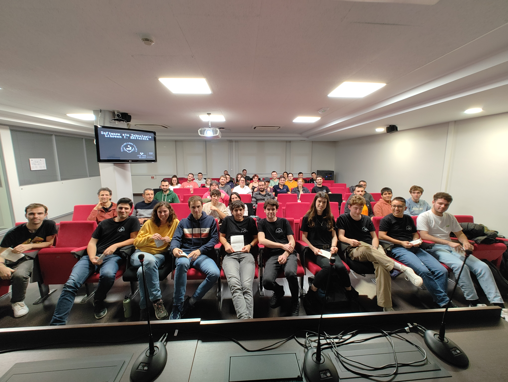
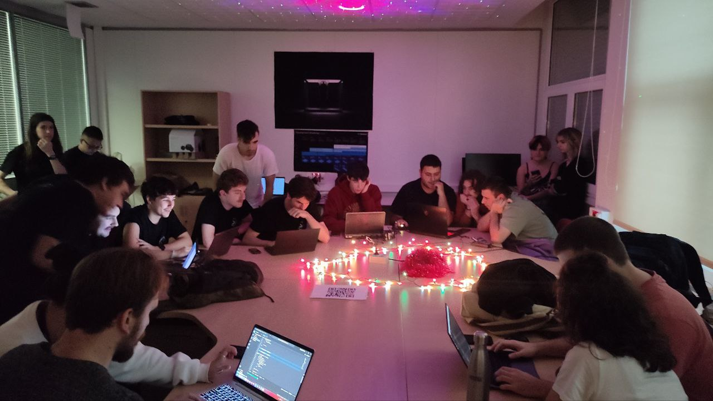

I. Ekitaldia
2021-2022 ikasturtean hasi genuen Software eta Teknologia Libreen taldea. Azaroaren 16an I. ekitaldia antolatu genuen, hurrengo ekitaldi gehienak jasoko zituen Ada Lovelace aretoan. Bertan, oraindik ere sortze prozesuan zegoen taldea aurkeztu eta hortik aurrera izango genituen dinamika batzuk definitu genituen.

Goizean goiz hasi ginen taldearen nondik norakoak azalduz. Ondoren, 4 aurkezpen izan genituen Mikel Malagon, Hugo Iñigo, Mikel Alvarez eta June Ortizen eskutik.

Bazkaldu ondoren, jaungoiko bedeinkatuaren agerpen onirikoa gertatu zen, bere jarraitzaile kuttunenak gozarazi zituen "Free or not to Free" hitzaldi legendarioarekin. Azken hitzaldia Iker Galardik egin zuen, C lengoaiaren inguruan.
Azkenik, kode ofuskazio lehiaketa mitikoa izan genuen. Hugoren musika elektroniko pintxada are mitikoaregoarekin girotua.

Eta hala bazen edo ze bazen, horrela amaitu genuen I. Software eta Teknologia Libreen ekitaldia. Bertan batu ginen lehenengo aldiz informatika fakultatean, zoragarria izan zen.
Mila esker etorri zineten guztioi!